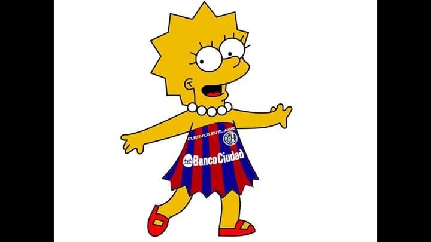

HOMERO LGARS
Homer Jay Simpson es un personaje ficticio protagonista de la serie de televisión de dibujos animados Los Simpson. Es el padre de la familia protagonista y uno de los personajes centrales más importantes de la serie.

MARGE AZULEJA
Marjorie Jacqueline Bouvier más conocida como Marge Simpson es un personaje ficticio de la serie de televisión de dibujos animados Los Simpson. Es la esposa de Homer Simpson y madre de los tres hijos que ha tenido de este matrimonio: Bart, Lisa y Maggie
BARTO SOLO VERDE
Bartholomew «Bart» J. Simpson es uno de los personajes ficticios protagonistas de la serie de televisión de dibujos animados Los Simpson. Bart tiene diez años y es el primogénito y único hijo varón de Homer y Marge Simpson. Es el hermano mayor de Lisa y Maggie.

LISA LORENZO
Lisa Marie Simpson es un personaje de la serie de televisión de dibujos animados Los Simpson. Es la hija mediana de Homer y Marge Simpson y hermana de Bart y Maggie. Goza de notable protagonismo y complejidad en la serie

MAGGIE LORENZO